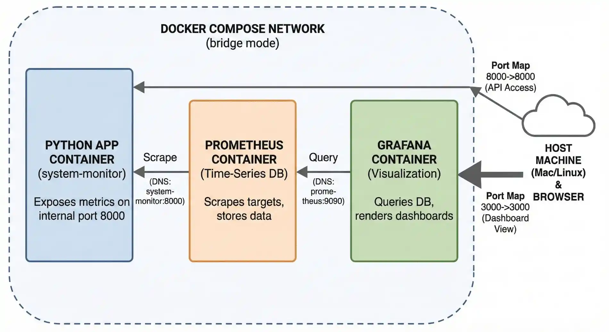

Containerized Observability Stack

- Problem
- Host health problems stay invisible until something breaks. I wanted real-time visibility into kernel-level metrics, with a warning before a host degrades.
- Approach
- A multi-threaded Python agent polls kernel metrics and serves them through a Flask producer. Prometheus scrapes it, Grafana renders live dashboards, and threshold breaches trigger REST API warnings. Three containers, orchestrated with Docker Compose.
- Result
- A reproducible monitoring stack that boots with one command: metrics collected, stored as time series, visualised and alerting end to end.